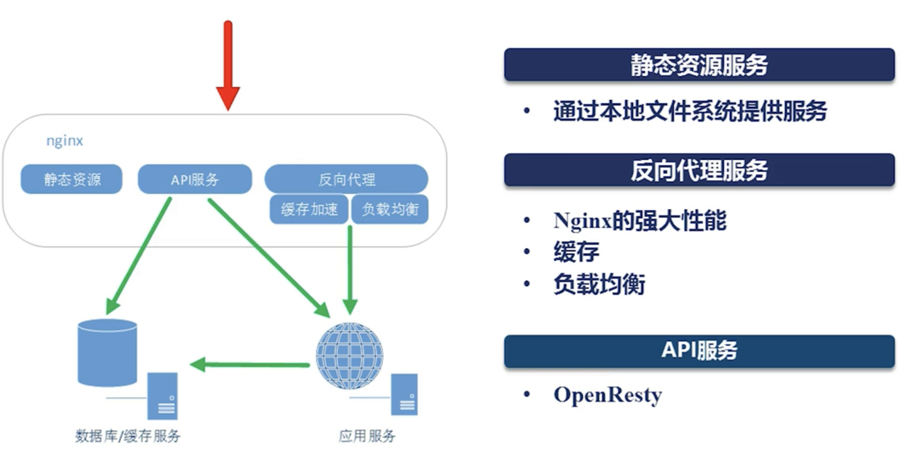
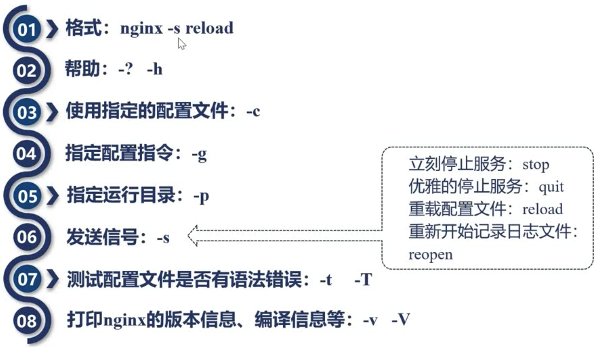

学习备注
- 10需要再看看
初识Nginx
主流web服务器
Nginx
Apache
Tomcat
Nginx优点
高并发、高性能
可扩展性好
高可靠性
热部署
BSD许可
Nginx的三个主要应用场景

Nginx为什么会出现
互联网的数据量快速增长：互联网的快速普及、全球化物联网
摩尔定律：性能提升
低效的Apache：一个连接对应一个进程
Nginx组成
Nginx配置语法
配置参数 - 时间单位
| 简写 | 单位 |
|---|---|
| ms | millisecond |
| s | seconds |
| m | minutes |
| h | hours |
| d | days |
| w | weeks |
| m | months，30 days |
| y | years，365days |
配置参数 - 空间单位
| 简写 | 单位 |
|---|---|
| bytes | |
| k/K | kilobytes |
| m/M | megabytes |
| g/G | gigabytes |
http配置的指令块
http
server
upstream
Location
Nginx命令行
